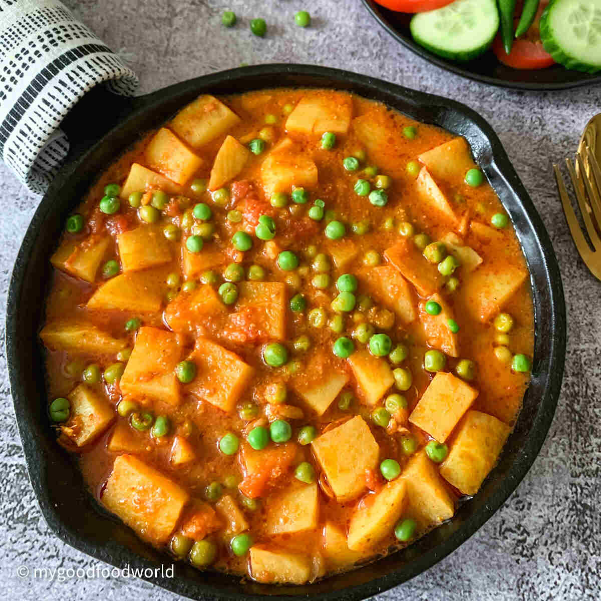

Aloo Matar

Original recipe by my mom, documented by her daughter
This recipe is a classic homecooking indian meal.
This dish was a staple in my house growing up. It's light, brothy, spicy, and cozy. Many people think indian food is oily or creamy based on what they get at restaurants, but real indian homecooking is focused on fresh vegetables and simple yet strong flavors.
Make this for the vegetarian in your life and I promise they will feel loved and cared for.
Ingredients
Quick disclaimer: I don't actually know the measurements for this recipe, recipes in indian families and I'm sure other Asian cultures, are not written down. Everything is eyeballed and added from the heart <3
- 2 small potatoes, peeled
- 1/2 cup a frozen (or fresh) peas, I use frozen
- 1 small onion, diced
- 1 medium tomato, diced
- 1 tablespoon minced ginger
- 2 tablespoons minced chili, you can use whatever chili based on the spice level you'd like or omit
- 2 tablespoons of a neutral oil
- 1/2 tablespoon of cumin seeds
- 2 teaspoons turmeric powder
- 2 teaspoons of salt
- 2 tablespoons of chopped cilantro
- 2 cups of water
Steps
- Add your oil to a medium-sized sauce pot or any larger pot on medium heat
- Add in your cumin seeds and wait for them to sizzle and become fragrant
- Add in your onions, let cook for a few minutes, and follow with your ginger and chili
- Cook until everything has softened and is fragrant, then add your chopped tomato
- Add your turmeric powder and salt, and stir
- Let this cook until the water is mostly gone and it's looking like a paste
- Add in your diced potatoes and stir, coating your potatoes nicely in this paste
- Add in your water, stir, then cover with a lid
-
If you are using fresh peas, you can add them now.
- When the potatoes are fork tender, add in your frozenpeas and cilantro and remove from heat
- If you'd like your soup more thick, keep cooking with the lid off. If you'd like it soupier, then remove from heat
- Taste and adjust salt
Home